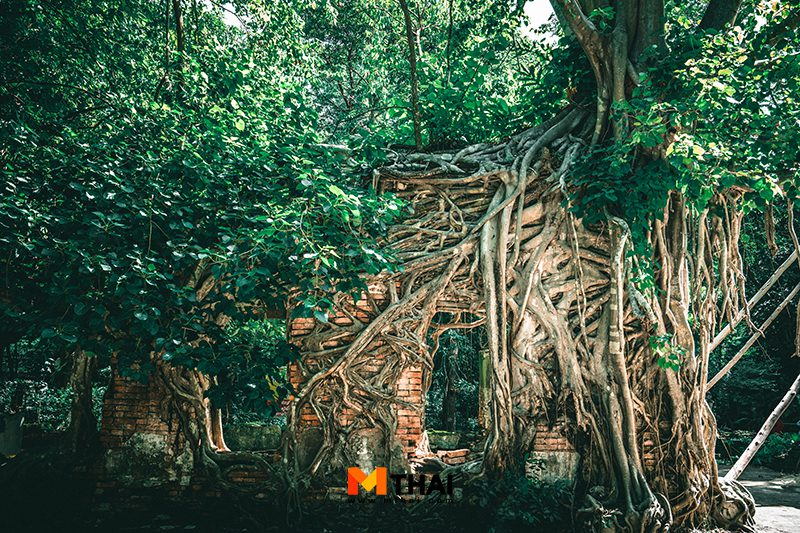
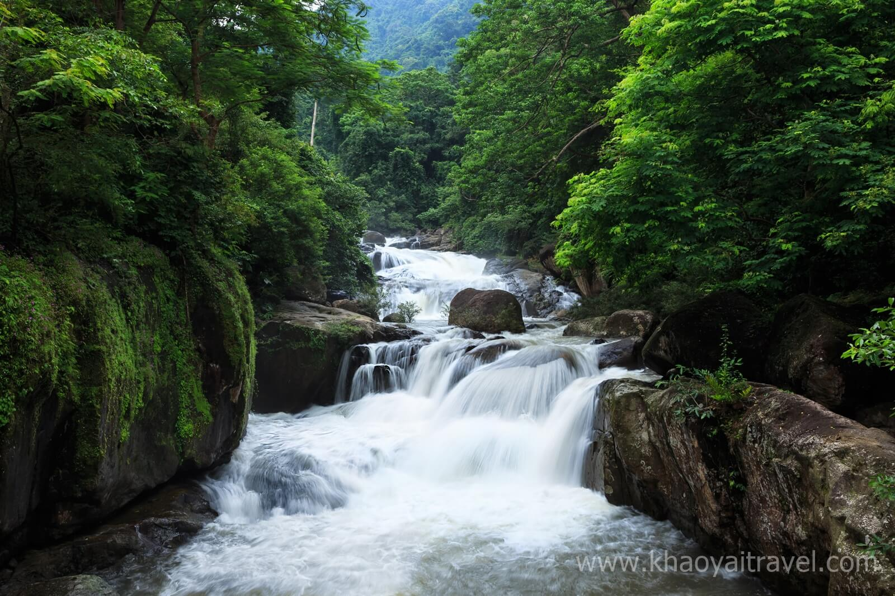
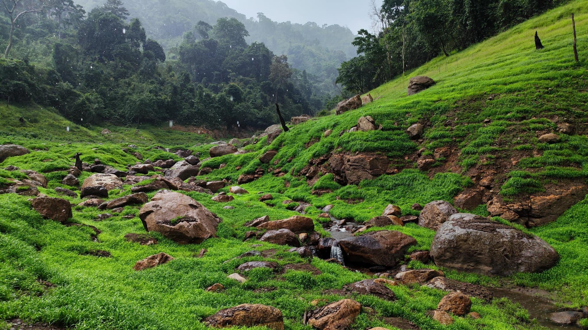

รายละเอียดสถานที่ท่องเที่ยวในจังหวัดนครนายก
จังหวัดนครนายกเป็นหนึ่งในจุดหมายปลายทางท่องเที่ยวที่น่าสนใจของภาคกลางของประเทศไทย ด้วยธรรมชาติที่สวยงามและอากาศที่สดชื่น ที่นี่มีสถานที่ท่องเที่ยวหลากหลาย ทั้งแหล่งธรรมชาติ วัดเก่าแก่ และกิจกรรมผจญภัย สำหรับผู้ที่รักการท่องเที่ยวและความสงบของธรรมชาติ ตั้งอยู่ทางทิศตะวันออกของประเทศไทย ระหว่างเส้นรุ้งที่ 14 องศาเหนือ และ เส้นแวงที่ 101 องศาตะวันออก มีระยะทางจากจากกรุงเทพมหานครตามถนนทางหลวง แผ่นดินหมายเลข 305 เลียบคลอง รังสิตผ่านอำเภอองครักษ์ถึง จังหวัดนครนายก ระยะทาง 105 กม. แต่ถ้ามีการก่อสร้างทางคมนาคม สายตรงจากกรุงเทพฯ จะมีระยะทางประมาณ 60 กม. มีเนื้อที่จังหวัดประมาณ 2,122 ตร.กม.หรือ ประมาณ 1,326,250 ไร่
1. เขื่อนขุนด่านปราการชล

เขื่อนขุนด่านปราการชลตั้งอยู่ที่อำเภอเมืองนครนายก เป็นเขื่อนคอนกรีตบดอัดที่ใหญ่ที่สุดในประเทศไทย และถูกสร้างขึ้นเพื่อรองรับน้ำจากแม่น้ำบางปะกง รวมถึงใช้ในการผลิตไฟฟ้า เขื่อนแห่งนี้เป็นสถานที่ท่องเที่ยวที่มีทิวทัศน์ที่สวยงามและเหมาะแก่การพักผ่อน
นอกจากนี้เขื่อนยังมีกิจกรรมกลางแจ้งหลากหลาย เช่น การพายเรือคายัคและการเดินป่า รวมถึงการจัดกิจกรรมการศึกษาด้านสิ่งแวดล้อมและการท่องเที่ยวเชิงเกษตร นักท่องเที่ยวสามารถชมวิวของเขื่อนและสัมผัสกับธรรมชาติที่สวยงามได้จากจุดชมวิวต่างๆ ภายในพื้นที่เขื่อน
ที่อยู่: ตำบลเขาพระ, อำเภอเมืองนครนายก, จังหวัดนครนายก 26000
เวลาทำการ: เปิดทุกวัน เวลา 08:00 - 17:00 น.
2. อุโมงค์ป่าไผ่

อุโมงค์ป่าไผ่เป็นเส้นทางเดินเท้าที่มีไผ่ขึ้นเรียงรายกันจนเกิดเป็นอุโมงค์ธรรมชาติ มีความยาวประมาณ 100 เมตร ใต้ร่มเงาของต้นไผ่ คุณจะรู้สึกเหมือนกำลังเดินท่ามกลางป่าทึบที่เต็มไปด้วยความสงบและเย็นสบาย เหมาะสำหรับการเดินเล่น ถ่ายภาพ และพักผ่อน
จุดเด่นของอุโมงค์ป่าไผ่คือการเปลี่ยนแปลงของแสงที่ลอดผ่านช่องว่างของต้นไผ่ทำให้เกิดแสงและเงาที่สวยงาม นักท่องเที่ยวสามารถเดินถ่ายรูปได้ตลอดเส้นทาง รวมถึงมีบรรยากาศที่เย็นสบายแม้ในวันที่อากาศร้อน
ที่อยู่: ตำบลท่ากระชับ, อำเภอเมืองนครนายก, จังหวัดนครนายก 26000
เวลาทำการ: เปิดทุกวัน เวลา 06:00 - 18:00 น.
3. วัดเลขธรรมกิตติ์
วัดเลขธรรมกิตติ์ตั้งอยู่ในอำเภอบ้านนา เป็นวัดเก่าแก่ที่มีความสำคัญทางประวัติศาสตร์ และเป็นแหล่งศึกษาความรู้ทางพุทธศาสนา นอกจากนี้ยังมีพระพุทธรูปองค์ใหญ่ที่ตั้งอยู่บนยอดเขา ซึ่งสามารถมองเห็นวิวทิวทัศน์ของพื้นที่รอบข้างได้อย่างกว้างขวาง
การเดินทางไปยังวัดเลขธรรมกิตติ์ต้องเดินขึ้นบันไดไปยังยอดเขา ซึ่งจะมีจุดชมวิวระหว่างทาง และยังมีบรรยากาศที่เงียบสงบเหมาะสำหรับการทำสมาธิและศึกษาธรรมะ สำหรับนักท่องเที่ยวที่ชื่นชอบการท่องเที่ยวเชิงศาสนาและวัฒนธรรม
ที่อยู่: ตำบลเลขธรรมกิตติ์, อำเภอบ้านนา, จังหวัดนครนายก 26110
เวลาทำการ: เปิดทุกวัน เวลา 08:00 - 17:00 น.
4. น้ำตกนางรอง
น้ำตกนางรองเป็นน้ำตกที่ตั้งอยู่ในอุทยานแห่งชาติเขาใหญ่ เป็นน้ำตกขนาดเล็กถึงปานกลาง แต่มีความสวยงามและน้ำใสสะอาด เหมาะแก่การมาเล่นน้ำพักผ่อนในช่วงหน้าร้อน หรือมาเที่ยวชมความงามของธรรมชาติในช่วงฤดูฝน
น้ำตกแห่งนี้มีบรรยากาศที่ร่มรื่นและเป็นธรรมชาติ นักท่องเที่ยวสามารถเดินทางมาได้ง่ายโดยไม่ต้องเดินทางไกล และยังสามารถเดินเล่นเส้นทางธรรมชาติที่อยู่ใกล้เคียงเพื่อสัมผัสความงดงามของป่าเขาอีกด้วย
ที่อยู่: อุทยานแห่งชาติเขาใหญ่, ตำบลหมูสี, อำเภอปากช่อง, จังหวัดนครนายก 30130
เวลาทำการ: เปิดทุกวัน เวลา 06:00 - 18:00 น.
5. เขาช่องลม
เขาช่องลมเป็นแหล่งท่องเที่ยวธรรมชาติที่มีวิวทิวทัศน์ของภูเขาและน้ำตกที่สวยงาม เหมาะสำหรับนักท่องเที่ยวที่ชื่นชอบกิจกรรมผจญภัย เช่น การเดินป่าและการถ่ายภาพภูมิทัศน์
จุดเด่นของเขาช่องลมคือทิวทัศน์ที่สวยงามในทุกมุมมอง ไม่ว่าจะเป็นวิวของเขาใหญ่ที่เต็มไปด้วยป่าไม้และทะเลหมอกในช่วงเช้า หรือวิวของน้ำตกที่ตั้งอยู่ด้านล่างซึ่งเป็นแหล่งน้ำสำคัญของพื้นที่
ที่อยู่: ตำบลเขาช่องลม, อำเภอเมืองนครนายก, จังหวัดนครนายก 26000
เวลาทำการ: เปิดทุกวัน เวลา 08:00 - 17:00 น.